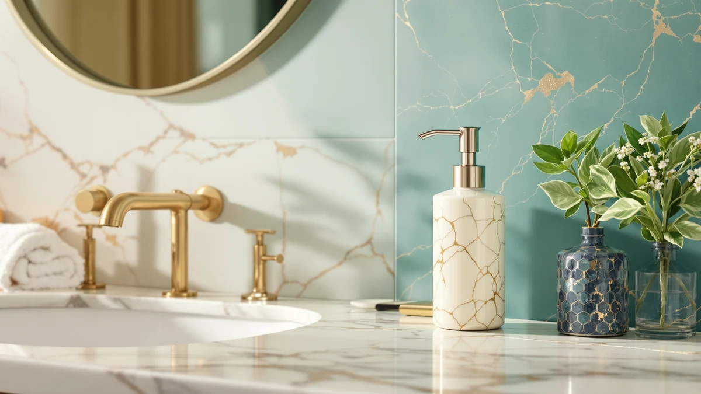

Beautiful Soap Dispenser (2026)
Prices and picks verified as of August 2026. Independent, reader-supported reviews.


Quick Answer
The PZOTRUF Automatic Soap Dispenser Touchless is the best all-around pick among the beautiful soap dispensers we compared, pairing a sleek silver finish with a precise infrared sensor and a 17-ounce tank that holds close to a full bottle of hand soap. If you want a polished stainless steel finish for a more upscale counter, the simplehuman Liquid Sensor Pump is worth the higher price.
Our pick: PZOTRUF Automatic Soap Dispenser Touchless — $20.99 Check Price on Amazon
Bottom line: our top pick is the PZOTRUF Automatic Soap Dispenser at $21.99. The best budget option is the Automatic Soap Dispenser at $16.99.
Things to Know Before You Buy
- Finish matters as much as function. Brushed stainless steel and matte silver read as intentional decor, while glossy plastic with visible seams tends to look like a kitchen gadget no matter how well the pump works. See our modern soap dispensers guide for more finish-first picks.
- Touchless sensors vary in precision. Infrared range runs from about 2 to 2.7 inches across the models here, and a shorter range means fewer accidental triggers from a nearby cup or toothbrush holder. Our soap dispenser with sensor guide breaks down sensor types in more depth.
- Power source affects long term upkeep. Rechargeable batteries and USB-C ports cut down on AA battery waste, but disposable batteries are easier to replace if you travel or misplace a charging cable.
- Capacity determines refill frequency. Tanks in this roundup range from 9 to 17 ounces, so a smaller dispenser means topping it off more often in a busy household.
- Waterproofing ratings differ. Only two dispensers here carry a listed IPX rating, IPX5 and IPX7, which matters if the dispenser sits close to a splashy kitchen faucet. For more sensor-driven picks generally, see our touchless soap dispensers guide.
A beautiful soap dispenser can turn a cluttered sink into something that looks intentional, and it does that job better than the plastic pump bottle that comes packaged with most hand soap. We compared seven touchless and manual dispensers for this guide, looking at finish, sensor accuracy, tank capacity and how each one holds up against water exposure near a sink. Cheap dispensers tend to drip down the side or clog after a few weeks of daily use, so spout design and refill access got as much attention as looks.
We built this list from manufacturer specifications, verified pricing on Amazon and patterns we found across owner reviews, not from a physical testing lab. Ilane Tall, our home and bath editor, tracks pricing and feature changes across dozens of soap dispensers each month for this site, which is how she spotted the gap between marketing copy and what these dispensers actually deliver. For most bathrooms, the PZOTRUF Automatic Soap Dispenser Touchless lands in the sweet spot: it looks clean on a counter, its infrared sensor responds within roughly 2.36 inches, and it costs under $25.
Not everyone needs a touchless dispenser, though. If you'd rather turn a dial than wave a hand under a sensor, the Aunmaon and Secura models below use manual adjustment instead of infrared and cost less to maintain over time. And if design matters more than price, the simplehuman Liquid Sensor Pump's brushed stainless steel body looks more like a bathroom fixture than an accessory, which is why it earns our pick for anyone treating their sink as part of the room's decor.
Why You Should Trust Us
Ilane Tall edits the home and bath coverage on this site and has spent years comparing small appliances and bathroom fixtures for online buying guides. For this piece, she compared specs, current Amazon pricing and verified owner reviews across dozens of touchless and manual dispensers before narrowing the field to the seven beautiful soap dispensers below. We do not run a physical testing lab and we do not claim to have installed these units in a real bathroom. Every claim in this guide traces back to the manufacturer's own listed specifications or to patterns that repeat across verified buyer reviews, and we say so explicitly whenever a detail comes from reviewer feedback rather than a spec sheet.
How We Picked
We started by pulling every automatic and manual soap dispenser sold under the tags relevant to this site's bathroom and kitchen sink category, then cut anything without a listed capacity, finish or sensor range. From there we prioritized dispensers with a stated waterproof rating, an adjustable output setting and a finish that photographs well on a counter, since a beautiful soap dispenser needs to look good sitting out as much as it needs to work well. We also checked how each brand describes battery life and refill capacity, and we dropped a handful of dispensers that had no listed dimensions or unclear power requirements. The seven that remain here cover a spread of finishes, price points and power sources, so you can match one to your own sink setup.
How We Compared
We compared these seven dispensers side by side on four factors: finish and visible design, sensor or dial precision, tank capacity, and power source. Pricing reflects Amazon listings checked in August 2026, and every feature listed here comes directly from each manufacturer's published specifications. Where a brand publishes a specific figure, such as simplehuman's three-month charge or RYTOXILO's IPX5 rating, we used that number rather than a rounded estimate. For finish and everyday usability, we leaned on patterns that repeat across verified owner reviews rather than a single reviewer's opinion, since one glowing or one negative review rarely tells the full story. This approach lets us point out a beautiful soap dispenser worth buying without pretending we photographed it ourselves under studio lighting.
Our Picks

PZOTRUF Automatic Soap Dispenser Touchless
What we like
- Infrared sensor detects a hand within about 2.36 inches, so it responds quickly without over-triggering
- 17-ounce tank holds close to a full bottle of hand soap between refills
- 5 adjustable output levels let you dial in exactly how much soap comes out per pump
- No-drip spout keeps the counter around it clean
Flaws but not dealbreakers
- Runs on batteries rather than a rechargeable pack, so it needs periodic AA swaps
- Silver plastic finish looks clean but isn't as premium as brushed stainless steel
| Material | ABS plastic |
| Size | — |
The PZOTRUF Automatic Soap Dispenser Touchless is the pick we'd point most people toward first among the beautiful soap dispensers in this guide. Its silver finish and rounded body look understated on a counter, and the transparent tank lets you see the soap level without opening anything. The infrared sensor detects a hand within roughly 2.36 inches, tight enough that it rarely fires when you set a cup or a toothbrush holder nearby, a complaint owners raise often about looser sensors on cheaper dispensers.
At 17 ounces, the tank holds close to a full standard bottle of hand soap, so refills happen less often than with the smaller dispensers in this lineup. Five adjustable output levels mean you can set a small dose for thin hand soap or a fuller pump for thicker dish soap, and the no-drip spout keeps the sink area from collecting a sticky ring underneath. The main tradeoff is the power source: it runs on batteries instead of a rechargeable pack, so you'll want a few spares on hand for the eventual swap. At $20.99, it undercuts the pricier picks here while still covering the sensor precision and capacity that matter most day to day.

Aunmaon Automatic Soap Dispenser Touchless
What we like
- 15-level physical dial gives fine-grained control over how much soap comes out per activation
- 3 AA batteries last up to a year under normal household use
- Works with both thick and thin soap without needing to dilute anything
- Wide fill opening and a see-through window make refills easy to judge
Flaws but not dealbreakers
- The dial sits on top of the unit, so you'll need to reach over it to adjust output
- Matte black finish shows fingerprints more than the brushed steel or chrome options here
| Material | ABS plastic |
| Size | — |
The Aunmaon Automatic Soap Dispenser Touchless separates itself from the other beautiful soap dispensers on this list through how it handles output control. Instead of a sensor with fixed presets, it uses a physical dial on top that adjusts across 15 levels, so the same setting holds steady until you turn it again. That consistency matters if multiple people share a sink and tend to bump dispenser settings by accident, since a dial doesn't reset itself the way some app-controlled models can.
Battery life stands out too. Aunmaon rates the three AA batteries for up to a year of typical use, longer than most touchless dispensers in this price range claim. It also handles both thick and thin soap without dilution, worth checking before buying any automatic dispenser, since some sensor models struggle to push thicker dish soap through a narrow spout. The wide fill opening and a see-through vertical window make it easy to tell when a refill is due. Owners note the matte black finish picks up fingerprints more visibly than the lighter finishes in this guide, worth knowing if you wipe down your counter daily.

simplehuman Liquid Sensor Pump 9
What we like
- High-grade brushed stainless steel body looks like a permanent bathroom fixture rather than a plastic accessory
- Variable dispense lets you control the amount by how close you hold your hand to the sensor
- Rechargeable via a magnetic charging puck, and one charge lasts up to 3 months
- No-drip spout matches the brand's higher build quality
Flaws but not dealbreakers
- At $69.95, it costs more than three times some of the other picks in this guide
- 9-ounce capacity is the smallest tank in this lineup, so it needs refilling more often
| Material | ABS plastic |
| Size | 9 oz. Rechargeable (New) |
The simplehuman Liquid Sensor Pump is the outlier in this guide on price, but the brushed stainless steel finish explains why. Where the other beautiful soap dispensers here use plastic bodies dressed up with a metallic-look coating, this one is actual high-grade brushed steel, and it reads that way on a counter next to stainless faucets and fixtures. The sensor also behaves differently than the infrared triggers on the cheaper picks: instead of one fixed dose, it varies the amount of soap based on how close you hold your hand, so you can pull a small drop for kids or a fuller pump for greasy dishes.
Charging is the other point worth flagging. A magnetic puck attaches to the base, and simplehuman rates a single charge for up to three months of typical use, which removes the recurring cost and hassle of AA batteries entirely. The tradeoff is capacity: at 9 ounces, the tank holds roughly half of what the PZOTRUF or Secura dispensers carry, so it needs refilling more often despite the higher price. For a primary kitchen sink that sees soap used constantly, that smaller tank is a real downside. For a guest bathroom or a lower-traffic sink where looks matter more than volume, it's a reasonable trade. Our stainless steel soap dispensers guide covers more finishes like this one.

Automatic Soap Dispenser Hand Soap
What we like
- Infrared sensor dispenses soap in about 0.25 seconds, among the fastest response times in this guide
- 6 adjustable output levels cover a light hand-soap dose to a fuller dish-soap pump
- USB-C rechargeable 1200mAh battery charges fully in about 3 hours and covers up to 5,000 dispensing cycles per charge
- Can sit on a countertop or mount to a wall
Flaws but not dealbreakers
- 12.8-ounce capacity is on the smaller end of this lineup
- Needs a USB-C charge eventually, less convenient than a quick battery swap when power runs low away from an outlet
| Material | ABS plastic |
| Size | — |
This Rudnia-made Automatic Soap Dispenser Hand Soap leans on speed. Its infrared sensor detects a hand within about 2.7 inches and dispenses in roughly 0.25 seconds, noticeably quicker than the delay you get from some cheaper touchless dispensers. Six adjustable levels give you room to fine-tune the dose, whether that's a light spray of hand soap for kids or a heavier pump for dish soap at the kitchen sink.
Power comes from a built-in 1200mAh battery charged over USB-C, and Rudnia rates it for roughly 5,000 dispensing cycles per full charge, which typically covers weeks of daily household use before it needs a top-up. A full charge takes about three hours. At 12.8 ounces, the tank is smaller than the PZOTRUF or Secura dispensers in this guide, so a busy kitchen sink will need more frequent refills. It mounts to a wall or sits on a countertop, giving it more placement flexibility than dispensers built for one setup only, and at $16.99 it's one of the least expensive rechargeable options here.

Secura 17oz Automatic Liquid Soap
What we like
- Adjustable volume control dial sets output anywhere from 0.03 to 0.19 ounces per activation
- Chrome and black finish looks classic on a bathroom counter rather than overtly high-tech
- Can be wall mounted or placed on a countertop
- On/off switch prevents accidental dispensing when it's not needed
Flaws but not dealbreakers
- Uses 4 AA batteries not included, and Secura warns against rechargeable batteries since the lower voltage keeps the pump from working correctly
- No touchless sensor, so you still press a button rather than waving a hand
| Material | ABS plastic |
| Size | 500ml |
The Secura 17oz Automatic Liquid Soap Dispenser takes the most straightforward approach to output control in this guide: a volume dial rather than a sensor with preset steps. That dial adjusts the dose from 0.03 to 0.19 ounces per activation, giving you more granular control over portion size than the fixed levels on some touchless competitors here. The chrome and black finish also skews more traditional than the modern silver and stainless steel dispensers elsewhere in this roundup, which fits a classic bathroom better than a minimalist one.
It runs on four AA batteries rather than a rechargeable pack, and Secura is explicit that rechargeable batteries shouldn't be used here, since the lower voltage keeps the pump from working correctly, worth knowing before you assume any AA battery will do. The 17-ounce tank matches the largest capacity in this lineup, so it holds up well in a household that goes through soap quickly. It can sit on a countertop or mount to a wall, and the on/off switch is a small but useful detail if young kids in the house tend to trigger dispensers by accident.

RYTOXILO Automatic Soap Dispenser 2
What we like
- Sold as a 2-pack, so both a kitchen and a bathroom sink get a matching dispenser for one price
- IPX5 watertight rating holds up to splashes better than dispensers without a listed waterproof rating
- 4 adjustable dispensing modes cover different soap types, including thicker dish soap and lotion
- Battery indicator light shows when it's time to recharge
Flaws but not dealbreakers
- Each unit holds 13.5 fluid ounces, so the pair-friendly size means more frequent refills than the largest single dispensers here
- Buying two at once means a higher total price than the single-unit picks in this guide
| Material | ABS plastic |
| Size | — |
The RYTOXILO Automatic Soap Dispenser sells as a 2-pack, which changes the math compared with the rest of this guide. Instead of picking one beautiful soap dispenser for a single sink, you get two matching black units, enough to outfit a kitchen and a bathroom, or keep a spare on hand once the first one runs low on charge. The infrared sensor supports 4 adjustable modes, switching between settings built for thin hand soap, thicker dish soap, shampoo, or lotion.
An IPX5 watertight rating sets it apart from most of the other dispensers here, which don't list a specific waterproof rating at all. That rating matters most near a kitchen faucet or a shower caddy, where splashes are routine rather than occasional. A battery indicator light flags when it's time to recharge, so you're less likely to be caught with a dead dispenser mid-wash. Each unit holds 13.5 fluid ounces, smaller than the PZOTRUF or Secura tanks, which makes sense for a two-unit set meant to be refilled from the same soap bottle rather than treated as a single large reservoir.

Seawah Automatic Soap Dispenser Touchless(Upgrade
What we like
- Switches between touchless auto mode and a manual high-volume mode for heavier cleaning jobs
- IPX7 rating is the highest waterproof rating in this guide, ahead of the RYTOXILO's IPX5
- Upgraded pump runs quieter than a standard automatic dispenser, according to Seawah's listed specs
- Rechargeable lithium polymer battery rated for up to roughly 200 days per charge
Flaws but not dealbreakers
- 3-level adjustment in auto mode is fewer increments than the Aunmaon's 15-level dial or Rudnia's 6 levels
- White finish shows soap residue and water spots more visibly than the darker or metallic finishes here
| Material | ABS plastic |
| Size | — |
The Seawah Automatic Soap Dispenser stands out in this guide for offering both automatic and manual operation in the same unit. In auto mode, infrared sensing runs the dispenser hands-free across 3 adjustable output levels. Switch to manual mode and it dispenses a larger volume on demand, useful for scrubbing a greasy pan where one touchless pump isn't enough soap. That flexibility is rare among the other beautiful soap dispensers here, which commit to one method or the other.
Seawah also lists an IPX7 waterproof rating, one step above the RYTOXILO's IPX5 and the highest rating of any dispenser in this comparison, which matters if it sits close to a kitchen faucet that splashes regularly. Seawah describes the built-in pump as quieter than a standard automatic dispenser, a detail that matters more than it sounds in a small bathroom where every sound carries. Power comes from a rechargeable lithium polymer battery rated for up to roughly 200 days per charge. The white finish keeps things simple, though it shows soap residue and water spots sooner than the black or stainless options elsewhere in this guide, so it needs a quick wipe-down more often to stay looking clean.
Quick Comparison
| Product | Material | Price | Rating | Best for | Get it |
|---|---|---|---|---|---|
| PZOTRUF Automatic Soap Dispenser Touchless | ABS plastic | $20.99 | 4 | Best all-around pick | View on Amazon → |
| Aunmaon Automatic Soap Dispenser Touchless | ABS plastic | $19.99 | 4 | Best for consistent portion control | View on Amazon → |
| simplehuman Liquid Sensor Pump 9 | ABS plastic | $69.95 | 4 | Best premium design pick | View on Amazon → |
| Automatic Soap Dispenser Hand Soap | ABS plastic | $16.99 | 4 | Best budget rechargeable pick | View on Amazon → |
| Secura 17oz Automatic Liquid Soap | ABS plastic | $27.99 | 4 | Best manual dial pick | View on Amazon → |
| RYTOXILO Automatic Soap Dispenser 2 | ABS plastic | $29.99 | 4 | Best two-pack pick | View on Amazon → |
| Seawah Automatic Soap Dispenser Touchless(Upgrade | ABS plastic | $18.99 | 4 | Best dual-mode pick | View on Amazon → |
What makes a soap dispenser look beautiful instead of purely functional?
Finish is the biggest factor.
Are touchless soap dispensers worth the extra cost over manual pumps?
For a shared bathroom or kitchen sink, yes.
The Competition
We also looked at several foam soap dispensers before leaving them out of this list. Foam dispensers use more moving parts inside the pump, which raises the odds of clogging over time, and none of the foam models we found matched the beautiful, streamlined look of the pump-style dispensers here. If foam is what you're after anyway, our automatic foam soap dispensers guide covers that category separately.
A handful of glass dispensers caught our eye for their look, but glass adds weight and breakage risk near a sink, and the automatic sensor versions we found in glass had shorter battery life than the plastic and stainless steel options in this guide. Our glass touchless soap dispensers guide has picks if that finish is non-negotiable for you.
We passed on dispensers priced above $80 as well. Once a soap dispenser crosses that line, you're typically paying for smart-home connectivity or app control that most bathrooms and kitchens don't need for a task as simple as dispensing soap. Between the seven picks that made this guide, the PZOTRUF Automatic Soap Dispenser Touchless is still the most beautiful soap dispenser for the price, and the one we'd point most people toward first.
Frequently Asked Questions
What makes a soap dispenser look beautiful instead of purely functional?
Finish is the biggest factor. Brushed stainless steel and matte silver read as intentional design, while glossy plastic with visible seams tends to look like a kitchen gadget. Capacity and spout shape matter too, since a dispenser that drips or has an oversized base rarely looks good sitting out on a counter.
Are touchless soap dispensers worth the extra cost over manual pumps?
For a shared bathroom or kitchen sink, yes. Touchless models like the PZOTRUF and Rudnia dispensers cut down on the germs that build up on a manual pump handle. If you live alone and don't mind pressing a pump, a manual dispenser such as the Secura costs less and never needs batteries changed on a set schedule.
How often do you need to refill an automatic soap dispenser?
That depends on tank size and household size. The dispensers in this guide hold between 9 and 17 ounces, and a household of two to four people using one dispenser daily typically refills every three to five weeks. Larger tanks like the PZOTRUF's 17-ounce capacity stretch that window out further. For upkeep between refills, see our guide to cleaning a soap dispenser pump.